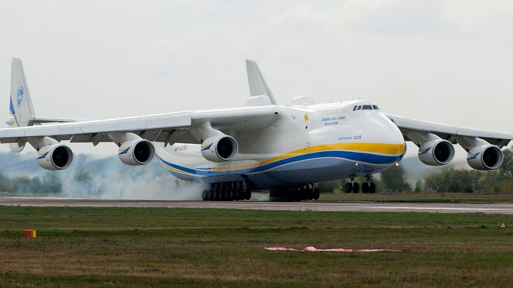

Ан-225 «Мрія» (кодове ім'я НАТО — «Козак») — найбільший та найпотужніший у світі транспортний літак, створений київським КБ імені Антонова. Головний конструктор — Віктор Ілліч Толмачов.
Ан-225 з максимальною злітною масою 640 т є найважчим літаком у світі. Для порівняння, третій за вантажопідйомністю (після Ан-124 «Руслан») американський військово-транспортний літак C-5 Galaxy має максимальну злітну масу 381 т.
Відстань, яку здолав літак братів Райт під час першого польоту є меншою за розмір вантажного відсіку «Мрії». Цей літак є також найбільшим у світі літаком, що піднявся в повітря більше одного разу (хоча розмах його крила й менший, ніж в американського літака Г'юз H-4 «Геркулес», що зробив лише один короткий випробувальний політ на низькій висоті). Літаки Ан-124 «Руслан» та Ан-225 більші від C-5 Galaxy, що є найбільшим літаком у США.
У листопаді 2004 року Міжнародна федерація повітроплавання внесла Ан-225 до Книги рекордів Гіннеса за його 240 рекордів.
Історія використання
Дослідний зразок цього літака здійснив свій перший політ 21 грудня 1988 року, а в березні 1989 року в одному польоті з максимальною злітною масою понад 500 000 кг (1 100 000 фунтів) було встановлено 106 світових рекордів і рекордів для літаків цього класу.
З розпадом Радянського Союзу у 1990 і закриттям програми «Енергія-Буран» єдиний діючий Ан-225 було поміщено в
ангар, його двигуни було демонтовано для використання на літаках Ан-124.
Перший комерційний політ
"Мрія"
здійснила 31 січня 2002 року зі Штутгарта до королівства Оман із вантажем 187,5 тон продуктів харчування для
американських військових, розташованих у країні. З того часу Ан-225 став у ряду з «Русланом» «робочою конячкою»
в парку літаків «Авіаліній Антонова» завдяки можливості транспортування об'єктів, що раніше не можна було
перевезти повітрям (локомотиви, 150-тонні генератори тощо). Можливість швидкого транспортування
великогабаритних вантажів, що необхідні постраждалим від стихійних лих, забезпечило літаку репутацію цінного
помічника для гуманітарних організацій.
- У серпні 2009 року «Мрія» була занесена до Книги рекордів Гіннесса за перевезення найбільшого в історії авіації моновантажу загальною вагою в 187,6 тонни. Це був генератор вагою у 174 тонни, що транспортувався разом із спеціальною рамою з німецького Франкфурта в Єреван, для нової вірменської електростанції. Екіпаж літака отримав сертифікат, що свідчить про внесення рекорду судна в «Книгу рекордів Гіннеса».
- 10 червня 2010 на замовлення однієї з провідних фрейтфорвардингових і логістичних компаній GEODIS WILSON A/S українським літаком Ан-225 був перевезений найдовший вантаж в історії повітряних перевезень — дві лопаті вітряка (довжиною 42,1 м кожна) з Китаю (аеропорт м. Шицзячжуан) в Данію (аеропорт Воєнс/Скридструп).
- березня 2011 року літак Ан-225 авіакомпанії «Авіалінії Антонова» доставив до Японії гуманітарні вантажі, генератори і техніку загальною масою 140 тонн для постраждалих від землетрусів та цунамі, на замовлення уряду Франції.
- 25 березня 2020 року стало відомо, що Ан-225 «Мрія» після 18 місяців ремонту та модернізації здійснив перший політ. «Зокрема було перевірено нову систему управління» — зазначається у повідомленні компанії. На літаку було встановлено нову систему керування силовою установкою українського виробництва.
- 23 квітня 2020 року літак доставив з Китаю до Києва 103 т медичних засобів для боротьби із коронавірусом. Літак зустрічав Президент України Володимир Зеленський, який зазначив, що літак транспортував 12 мільйонів медичних масок, близько 260 тисяч захисних окулярів для медиків і понад 100 тисяч захисних костюмів 5-го рівня захисту.
- 27 лютого 2022 року під час повітряної атаки російських військ на аеропорт Гостомель літак було знищено.
Рекорди
На рахунку мрії є:
- Рекорди з перевезення максимального комерційного вантажу в 247 т;
- Абсолютний рекорд вантажопідйомності — 253,8 т;
- Перевезення найважчого в історії авіації моновантажу — 187,6 т — з Франкфурта (Німеччина) до Єревана (Вірменія);
- Перевезення найдовшого в історії авіації моновантажу — 42,1 м — з Шицзячжуану, Китай (аеропорт м. Шицзячжуан) в Воєнс, Данія (аеропорт Воєнс/Скридструп);
Всього Ан-225 «Мрія» встановив 240 світових рекордів, що є абсолютно унікальним випадком в авіації.
Знищення
Під час російського вторгнення в Україну 27 лютого 2022 року у результаті повітряної атаки російських окупантів
на аеропорт Гостомель під Києвом літак Ан-225 «Мрія», один із найбільших та найпотужніших літаків у світі, був
спалений.
На момент вторгнення літак перебував на ремонті в аеропорту Гостомель, тому не встиг вилетіти з
України. Укроборонпром обіцяє відновити літак за кошти окупанта. За попередніми підрахунками для цього
необхідно понад 3 млрд доларів та близько 5 років.
Генеральний директор «Укроборонпрому» Юрій Гусєв заявив:
- «Росія знищила нашу „Мрію“, але мрію про вільну від окупанта Україну знищити неможливо. Ми боротимемося за нашу землю та дім до переможного кінця. І після перемоги обов'язково, чуєте, обов'язково добудуємо нашу нову „Мрію“, яка багато років чекає на це у безпечному місці. Все буде Україна!».
Після звільнення Гостомеля українськими військами, коли вдалося побачити рештки спаленої «Мрії», в авіаційних
колах України знову обговорюють можливість побудови нового літака Ан-225.
Державне підприємство «Антонов»
пропонує створити Міжнародний фонд відродження транспортного літака Ан-225 «Мрія».